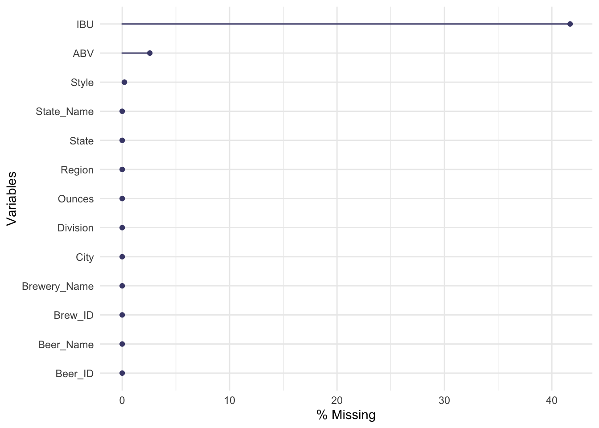
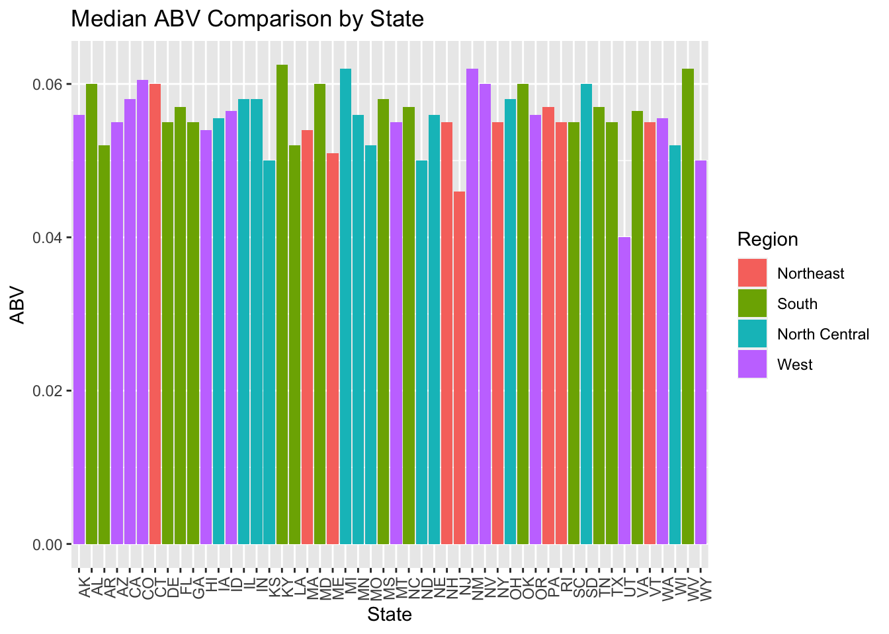
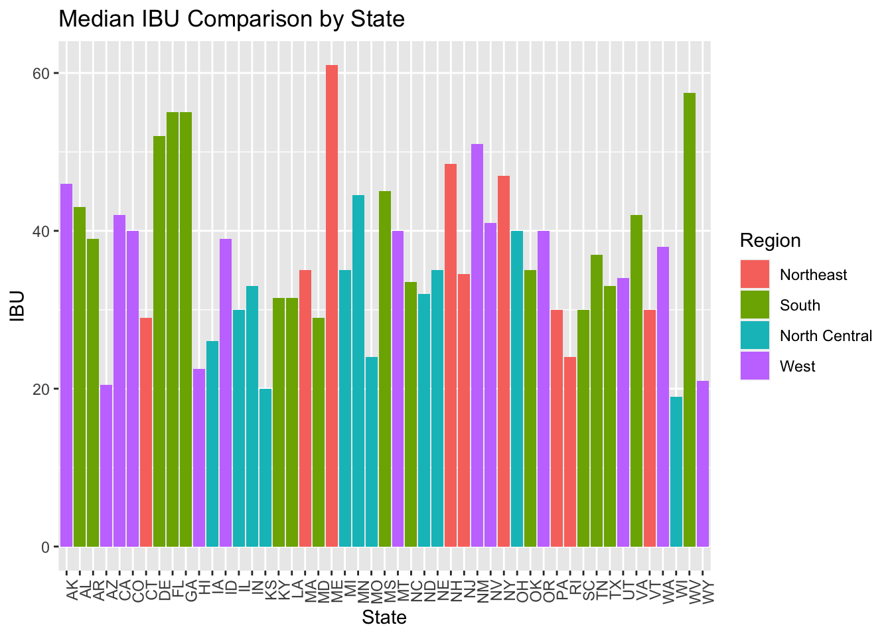
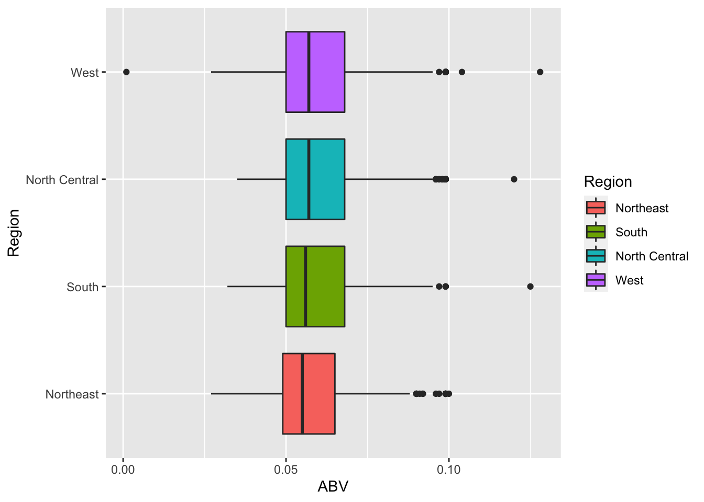
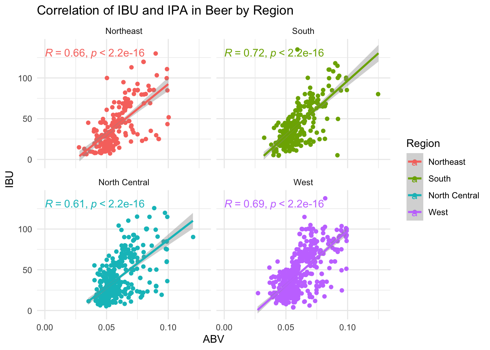
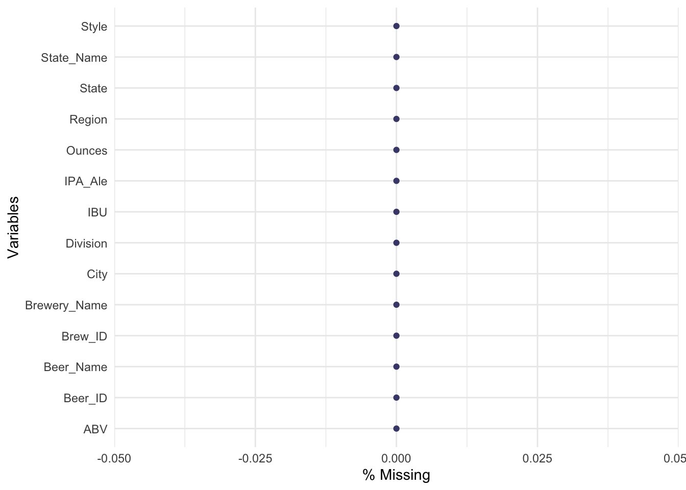
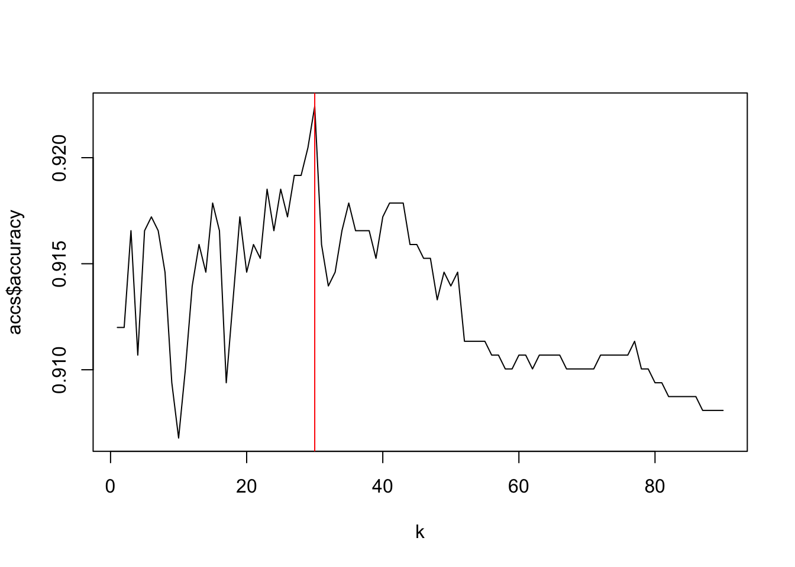
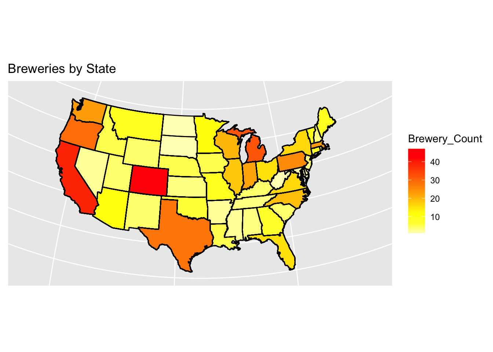
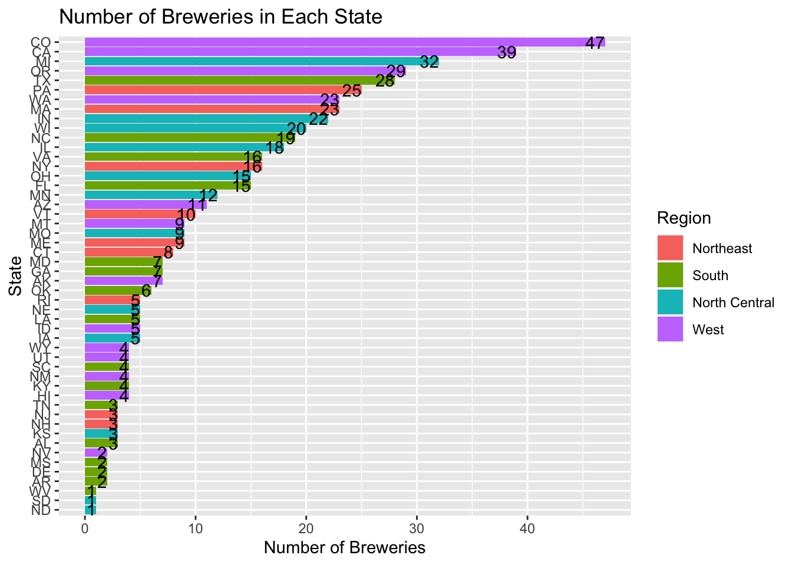

Mr. Doukeris and Mr. Tennenbaum, according to The Beer Institute on average the adult 21 and over consumes around 28.2 gallons of beer a year. Which equates to roughly a six pack of beer per week. During my analysis of the brewery data, I have found that on average each state has 11 breweries With the exception of California, Colorado, Michigan, Texas, and Oregon which contain over 28 breweries each. Colorado not only contains the most breweries with 47 total but also the biggest ABV at 12.8% while Oregon has the most bitter at 138 IBU which ranges from 0 to 140. We suggest that adding an additional breweries to Arizona, South Carolina, Indiana, and Maine would greatly impact beer sales to combat the ever growing microbrewery influx. According to the Associated Press, these states have seen the least amount of population decline of the the last year. Additions to California, Georgia, New York and Texas would also be beneficial due those states having a low brewery per 100k, with populations over 28mm people. While Texas and California have some of the highest number of breweries in total, they average less than .5 breweries per 100k. IPA’s and Ale’s consist of more 60% of the beers and continue to rise are the most common consumed beer in the United States. Additions of higher ABV beers such as IPAs to the Western and Southern Regions and additions of lower IBU beers such as Ales in the North Central and Northeast would increase sales as these align with the current selection in the area.
Pertaining to beer classifications that were asked, we can accurately predict whether a beer is an Ale or an IPA based on the combination of IBU and ABV at a rate of almost 92% using a model based off of comparing similar beer components called k-nearest neighbor. When comparing to other commonly used models such as Naïve-Bayes it performed at a significantly better rate.
library(tidyr)
library(tidyverse)## ── Attaching packages ─────────────────────────────────────── tidyverse 1.3.1 ──## ✓ ggplot2 3.3.3 ✓ dplyr 1.0.6
## ✓ tibble 3.1.1 ✓ stringr 1.4.0
## ✓ readr 1.4.0 ✓ forcats 0.5.1
## ✓ purrr 0.3.4## ── Conflicts ────────────────────────────────────────── tidyverse_conflicts() ──
## x dplyr::filter() masks stats::filter()
## x dplyr::lag() masks stats::lag()library(magrittr)##
## Attaching package: 'magrittr'## The following object is masked from 'package:purrr':
##
## set_names## The following object is masked from 'package:tidyr':
##
## extractlibrary(dplyr)
library(readr)
library(knitr)
#reading in data
beers = read_csv('~/Desktop/MSDS/Doing Data Science/MSDS_6306_Doing-Data-Science-Master/Unit 8 and 9 Case Study 1/Beers.csv')##
## ── Column specification ────────────────────────────────────────────────────────
## cols(
## Name = col_character(),
## Beer_ID = col_double(),
## ABV = col_double(),
## IBU = col_double(),
## Brewery_id = col_double(),
## Style = col_character(),
## Ounces = col_double()
## )breweries = read_csv('~/Desktop/MSDS/Doing Data Science/MSDS_6306_Doing-Data-Science-Master/Unit 8 and 9 Case Study 1/Breweries.csv')##
## ── Column specification ────────────────────────────────────────────────────────
## cols(
## Brew_ID = col_double(),
## Name = col_character(),
## City = col_character(),
## State = col_character()
## )head(beers)## # A tibble: 6 x 7
## Name Beer_ID ABV IBU Brewery_id Style Ounces
## <chr> <dbl> <dbl> <dbl> <dbl> <chr> <dbl>
## 1 Pub Beer 1436 0.05 NA 409 American Pale Lager 12
## 2 Devil's Cup 2265 0.066 NA 178 American Pale Ale (APA) 12
## 3 Rise of the Pho… 2264 0.071 NA 178 American IPA 12
## 4 Sinister 2263 0.09 NA 178 American Double / Impe… 12
## 5 Sex and Candy 2262 0.075 NA 178 American IPA 12
## 6 Black Exodus 2261 0.077 NA 178 Oatmeal Stout 12head(breweries)## # A tibble: 6 x 4
## Brew_ID Name City State
## <dbl> <chr> <chr> <chr>
## 1 1 NorthGate Brewing Minneapolis MN
## 2 2 Against the Grain Brewery Louisville KY
## 3 3 Jack's Abby Craft Lagers Framingham MA
## 4 4 Mike Hess Brewing Company San Diego CA
## 5 5 Fort Point Beer Company San Francisco CA
## 6 6 COAST Brewing Company Charleston SCThere are on average 11 breweries per state with 5 states having over 28 breweries each.
breweries %>% count(State)## # A tibble: 51 x 2
## State n
## <chr> <int>
## 1 AK 7
## 2 AL 3
## 3 AR 2
## 4 AZ 11
## 5 CA 39
## 6 CO 47
## 7 CT 8
## 8 DC 1
## 9 DE 2
## 10 FL 15
## # … with 41 more rows#average number of breweries per state
#creating brew object for quick analysis
brew_cnt = breweries %>%
count(State) %>%
mutate(State = ifelse(State == 'DC','MD',State))
brew_cnt## # A tibble: 51 x 2
## State n
## <chr> <int>
## 1 AK 7
## 2 AL 3
## 3 AR 2
## 4 AZ 11
## 5 CA 39
## 6 CO 47
## 7 CT 8
## 8 MD 1
## 9 DE 2
## 10 FL 15
## # … with 41 more rows#renaming column for better understanding
names(brew_cnt)[2] = 'Brewery_Count'
summary(brew_cnt$Brewery_Count)## Min. 1st Qu. Median Mean 3rd Qu. Max.
## 1.00 3.50 7.00 10.94 16.00 47.00#renaming columns to match as Brew_ID and Brewery_ID do not match
names(beers)[1] = 'Beer_Name'
names(beers)[5] = 'Brew_ID'
#changing "Name" in brewery data set to "Brewery_Name" for easy analysis
names(breweries)[2] = 'Brewery_Name'
#defaulting DC "State" to Maryland for NA Values when joining to state Data Set
breweries = breweries %>%
mutate(State = ifelse(State == 'DC','MD',State))
#merging data sets
bb = left_join(breweries,beers,by = NULL)## Joining, by = "Brew_ID"#join to state on abbreviation for region
#using state data set for region information
state = data.frame(state.abb, tolower(state.name), state.region, state.division)
#renaming columns for merging
names(state)[1] = 'State'
names(state)[2] = 'State_Name'
names(state)[3] = 'Region'
names(state)[4] = 'Division'
#merging final data set with stat information
bb = left_join(bb,state, by = NULL)## Joining, by = "State"#print first and last 6 rows in data set
head(bb,6)## # A tibble: 6 x 13
## Brew_ID Brewery_Name City State Beer_Name Beer_ID ABV IBU Style Ounces
## <dbl> <chr> <chr> <chr> <chr> <dbl> <dbl> <dbl> <chr> <dbl>
## 1 1 NorthGate Br… Minn… MN Get Toge… 2692 0.045 50 Americ… 16
## 2 1 NorthGate Br… Minn… MN Maggie's… 2691 0.049 26 Milk /… 16
## 3 1 NorthGate Br… Minn… MN Wall's E… 2690 0.048 19 Englis… 16
## 4 1 NorthGate Br… Minn… MN Pumpion 2689 0.06 38 Pumpki… 16
## 5 1 NorthGate Br… Minn… MN Strongho… 2688 0.06 25 Americ… 16
## 6 1 NorthGate Br… Minn… MN Parapet … 2687 0.056 47 Extra … 16
## # … with 3 more variables: State_Name <chr>, Region <fct>, Division <fct>tail(bb,6)## # A tibble: 6 x 13
## Brew_ID Brewery_Name City State Beer_Name Beer_ID ABV IBU Style Ounces
## <dbl> <chr> <chr> <chr> <chr> <dbl> <dbl> <dbl> <chr> <dbl>
## 1 556 Ukiah Brewin… Ukiah CA Pilsner U… 98 0.055 NA Germ… 12
## 2 557 Butternuts B… Garra… NY Heinniewe… 52 0.049 NA Hefe… 12
## 3 557 Butternuts B… Garra… NY Snapperhe… 51 0.068 NA Amer… 12
## 4 557 Butternuts B… Garra… NY Moo Thund… 50 0.049 NA Milk… 12
## 5 557 Butternuts B… Garra… NY Porkslap … 49 0.043 NA Amer… 12
## 6 558 Sleeping Lad… Ancho… AK Urban Wil… 30 0.049 NA Engl… 12
## # … with 3 more variables: State_Name <chr>, Region <fct>, Division <fct>write.csv(bb,'bs.csv',row.names = FALSE)
head(bb)## # A tibble: 6 x 13
## Brew_ID Brewery_Name City State Beer_Name Beer_ID ABV IBU Style Ounces
## <dbl> <chr> <chr> <chr> <chr> <dbl> <dbl> <dbl> <chr> <dbl>
## 1 1 NorthGate Br… Minn… MN Get Toge… 2692 0.045 50 Americ… 16
## 2 1 NorthGate Br… Minn… MN Maggie's… 2691 0.049 26 Milk /… 16
## 3 1 NorthGate Br… Minn… MN Wall's E… 2690 0.048 19 Englis… 16
## 4 1 NorthGate Br… Minn… MN Pumpion 2689 0.06 38 Pumpki… 16
## 5 1 NorthGate Br… Minn… MN Strongho… 2688 0.06 25 Americ… 16
## 6 1 NorthGate Br… Minn… MN Parapet … 2687 0.056 47 Extra … 16
## # … with 3 more variables: State_Name <chr>, Region <fct>, Division <fct>IBU,ABV and Style all have missing data points. IBU has over 40% NA values while ABV and Style are less than 5%.
#missing values graph. Issues addressed in KNN classifier section
library(naniar)
colSums(is.na(bb))## Brew_ID Brewery_Name City State Beer_Name Beer_ID
## 0 0 0 0 0 0
## ABV IBU Style Ounces State_Name Region
## 62 1005 5 0 0 0
## Division
## 0gg_miss_var(bb,show_pct = TRUE)
Median ABV: 5.6% Median IBU: 35.00
#bar chart of median ABV per state
bb %>% filter(!is.na(ABV)) %>%
ggplot(aes(State, ABV, fill = Region)) +
geom_bar(stat = 'summary', fun = 'median') +
theme(axis.text.x = element_text(angle = 90, hjust = 1))+
ggtitle('Median ABV Comparison by State')
#5 number summary of ABV
summary(bb$ABV)## Min. 1st Qu. Median Mean 3rd Qu. Max. NA's
## 0.00100 0.05000 0.05600 0.05977 0.06700 0.12800 62#bar chart of median IBU per state
bb %>% filter(!is.na(IBU)) %>%
ggplot(aes(State, IBU, fill = Region)) +
geom_bar(stat = 'summary', fun= 'median') +
theme(axis.text.x = element_text(angle = 90, hjust = 1))+
ggtitle('Median IBU Comparison by State')
#5 number summary of IBU
summary(bb$IBU)## Min. 1st Qu. Median Mean 3rd Qu. Max. NA's
## 4.00 21.00 35.00 42.71 64.00 138.00 1005Colorado has the beer with the highest ABV of 12.8 from Upslope Brewing. Oregon has the beer with the highest IBU of 138 from Astoria Brewing.
#finding record with maximum ABV
bb[which.max(bb$ABV),]## # A tibble: 1 x 13
## Brew_ID Brewery_Name City State Beer_Name Beer_ID ABV IBU Style Ounces
## <dbl> <chr> <chr> <chr> <chr> <dbl> <dbl> <dbl> <chr> <dbl>
## 1 52 Upslope Brew… Bould… CO Lee Hill … 2565 0.128 NA Quad… 19.2
## # … with 3 more variables: State_Name <chr>, Region <fct>, Division <fct>#finding record with maximum IBU
bb[which.max(bb$IBU),]## # A tibble: 1 x 13
## Brew_ID Brewery_Name City State Beer_Name Beer_ID ABV IBU Style Ounces
## <dbl> <chr> <chr> <chr> <chr> <dbl> <dbl> <dbl> <chr> <dbl>
## 1 375 Astoria Brew… Astor… OR Bitter B… 980 0.082 138 Ameri… 12
## # … with 3 more variables: State_Name <chr>, Region <fct>, Division <fct>The ABVs of beers in the data set range from 0.1% to 12.8% with an average of 5.9%. The majority of the beers in each region range from 5% to 6.7%.
#obtain summary statistics of ABV
summary(bb$ABV)## Min. 1st Qu. Median Mean 3rd Qu. Max. NA's
## 0.00100 0.05000 0.05600 0.05977 0.06700 0.12800 62#box plot of ABV by region for analysis
bb %>%
ggplot(aes(ABV,Region))+
geom_boxplot(aes(fill = Region))## Warning: Removed 62 rows containing non-finite values (stat_boxplot).
There is a slight positive correlation between IBU and ABV. As ABV increases IBU increases as well.
library(ggthemes)
library(ggpubr)
#creating a scatter plot for relationship between IBU and ABV
#adding pearson correlation information to determine relationship
#breaking out graph by Region
bb %>%
ggplot(aes(ABV,IBU, color = Region)) +
geom_point(position = 'jitter')+
geom_smooth(method = 'lm')+
stat_cor(method="pearson", label.x = 0,label.y = 130)+
ggtitle('Correlation of IBU and IPA in Beer by Region')+
facet_wrap(~Region)+
theme_minimal()## `geom_smooth()` using formula 'y ~ x'## Warning: Removed 1005 rows containing non-finite values (stat_smooth).## Warning: Removed 1005 rows containing non-finite values (stat_cor).## Warning: Removed 1005 rows containing missing values (geom_point).
Using a KNN model, we were able to predict the style of beer with a 90.74% accuracy.
library(class)
library(caret)## Loading required package: lattice##
## Attaching package: 'caret'## The following object is masked from 'package:purrr':
##
## liftlibrary(e1071)
set.seed(25)
#Filter down to Ale's and IPA's
bb_knn = bb %>%
filter(grepl('\\bAle\\b|\\bIPA\\b',Style,ignore.case = TRUE))
#create IPA/Ale column for analysis
bb_knn$IPA_Ale = as.character(ifelse(grepl('\\bIPA\\b',bb_knn$Style,ignore.case = TRUE),'IPA','Ale'))
#fixing NA values in data set
#find mean to impute for NA values
abv_mean = aggregate(ABV ~ IPA_Ale, bb_knn, mean)
abv_mean## IPA_Ale ABV
## 1 Ale 0.05681330
## 2 IPA 0.06879286ibu_mean = aggregate(IBU ~ IPA_Ale, bb_knn, mean)
ibu_mean## IPA_Ale IBU
## 1 Ale 34.33333
## 2 IPA 71.94898#mutate NA values from mean values
bb_knn = bb_knn %>%
mutate(IBU = ifelse(IPA_Ale =='IPA', replace_na(IBU,ibu_mean[[2,2]]),replace_na(IBU,ibu_mean[[1,2]])))%>%
mutate(ABV = ifelse(IPA_Ale =='IPA', replace_na(ABV,abv_mean[[2,2]]),replace_na(ABV,abv_mean[[1,2]])))
#check for NA values after imputation
gg_miss_var(bb_knn,show_pct = TRUE)
#standardize IBU and ABV for knn model
bb_knn$Z_IBU = scale(bb_knn$IBU)
bb_knn$Z_ABV = scale(bb_knn$ABV)
#creation of KNN model using leave one out method
classification = knn.cv(bb_knn[,c(15,16)],bb_knn$IPA_Ale,prob = TRUE, k = 10)
table(classification,bb_knn$IPA_Ale)##
## classification Ale IPA
## Ale 894 74
## IPA 69 497confusionMatrix(table(classification,bb_knn$IPA_Ale))## Confusion Matrix and Statistics
##
##
## classification Ale IPA
## Ale 894 74
## IPA 69 497
##
## Accuracy : 0.9068
## 95% CI : (0.8911, 0.9209)
## No Information Rate : 0.6278
## P-Value [Acc > NIR] : <2e-16
##
## Kappa : 0.8002
##
## Mcnemar's Test P-Value : 0.738
##
## Sensitivity : 0.9283
## Specificity : 0.8704
## Pos Pred Value : 0.9236
## Neg Pred Value : 0.8781
## Prevalence : 0.6278
## Detection Rate : 0.5828
## Detection Prevalence : 0.6310
## Balanced Accuracy : 0.8994
##
## 'Positive' Class : Ale
## To find the most accurate model, we compared against a Naive Bayes model which was slighly less accurate at predicting the beer style by 2%.
#NAIVE BAYES model to compare to KNN
#set seed for reproducible results
set.seed(4)
#creating a 70/30 split for train and test data sets
trainIndices = sample(seq(1:length(bb_knn$IPA_Ale)),round(.7*length(bb_knn$IPA_Ale)))
#creating test and train data sets
train_nb = bb_knn[trainIndices,]
test_nb = bb_knn[-trainIndices,]
#running naive bayes model
model = naiveBayes(train_nb[,c(15,16)],train_nb$IPA_Ale)
table(predict(model,test_nb[,c(15,16)]),test_nb$IPA_Ale)##
## Ale IPA
## Ale 259 28
## IPA 23 150confusionMatrix(table(predict(model,test_nb[,c(15,16)]),test_nb$IPA_Ale))## Confusion Matrix and Statistics
##
##
## Ale IPA
## Ale 259 28
## IPA 23 150
##
## Accuracy : 0.8891
## 95% CI : (0.8568, 0.9163)
## No Information Rate : 0.613
## P-Value [Acc > NIR] : <2e-16
##
## Kappa : 0.7651
##
## Mcnemar's Test P-Value : 0.5754
##
## Sensitivity : 0.9184
## Specificity : 0.8427
## Pos Pred Value : 0.9024
## Neg Pred Value : 0.8671
## Prevalence : 0.6130
## Detection Rate : 0.5630
## Detection Prevalence : 0.6239
## Balanced Accuracy : 0.8806
##
## 'Positive' Class : Ale
## In this section we ran the model 90 times to get the best parameter for the model. When using the tuned model with a k=30 we were able to accurately predict the style 92% of the time.
set.seed(25)
#running KNN model 90 times to find best k parameter
accs = data.frame(accuracy = numeric(90), k = numeric(90))
for(i in 1:90)
{
classification = knn.cv(bb_knn[,c(15,16)],bb_knn$IPA_Ale,prob = TRUE, k = i)
table(classification,bb_knn$IPA_Ale)
CM = confusionMatrix(table(classification,bb_knn$IPA_Ale))
accs$accuracy[i] = CM$overall[1]
accs$k[i] = i
}
plot(accs$k,accs$accuracy, type = "l", xlab = "k")
abline(v=accs$k[which.max(accs$accuracy)], col="red")
accs$k[which.max(accs$accuracy)]## [1] 30set.seed(25)
#use tuned parameter from code above
classification = knn.cv(bb_knn[,c(15,16)],bb_knn$IPA_Ale,prob = TRUE, k = 30)
table(classification,bb_knn$IPA_Ale)##
## classification Ale IPA
## Ale 908 66
## IPA 55 505confusionMatrix(table(classification,bb_knn$IPA_Ale))## Confusion Matrix and Statistics
##
##
## classification Ale IPA
## Ale 908 66
## IPA 55 505
##
## Accuracy : 0.9211
## 95% CI : (0.9065, 0.9341)
## No Information Rate : 0.6278
## P-Value [Acc > NIR] : <2e-16
##
## Kappa : 0.8306
##
## Mcnemar's Test P-Value : 0.3633
##
## Sensitivity : 0.9429
## Specificity : 0.8844
## Pos Pred Value : 0.9322
## Neg Pred Value : 0.9018
## Prevalence : 0.6278
## Detection Rate : 0.5919
## Detection Prevalence : 0.6349
## Balanced Accuracy : 0.9137
##
## 'Positive' Class : Ale
## In the below code, we join to another US data set to plot a US heat map of the brewery count by state for easy analysis.
library(maps)##
## Attaching package: 'maps'## The following object is masked from 'package:purrr':
##
## maplibrary(plotly)##
## Attaching package: 'plotly'## The following object is masked from 'package:ggplot2':
##
## last_plot## The following object is masked from 'package:stats':
##
## filter## The following object is masked from 'package:graphics':
##
## layout#create heat map of breweries per state
states_map = map_data("state")
names(states_map)[5] = 'State_Name'
states_map = left_join(states_map,state,by=NULL)## Joining, by = "State_Name"states_map = left_join(breweries, states_map, by = NULL)## Joining, by = "State"states_map## # A tibble: 223,088 x 12
## Brew_ID Brewery_Name City State long lat group order State_Name subregion
## <dbl> <chr> <chr> <chr> <dbl> <dbl> <dbl> <int> <chr> <chr>
## 1 1 NorthGate B… Minn… MN -96.4 43.5 25 7047 minnesota <NA>
## 2 1 NorthGate B… Minn… MN -96.4 43.9 25 7048 minnesota <NA>
## 3 1 NorthGate B… Minn… MN -96.4 44.2 25 7049 minnesota <NA>
## 4 1 NorthGate B… Minn… MN -96.4 44.5 25 7050 minnesota <NA>
## 5 1 NorthGate B… Minn… MN -96.4 44.6 25 7051 minnesota <NA>
## 6 1 NorthGate B… Minn… MN -96.4 44.8 25 7052 minnesota <NA>
## 7 1 NorthGate B… Minn… MN -96.4 45.0 25 7053 minnesota <NA>
## 8 1 NorthGate B… Minn… MN -96.4 45.3 25 7054 minnesota <NA>
## 9 1 NorthGate B… Minn… MN -96.4 45.3 25 7055 minnesota <NA>
## 10 1 NorthGate B… Minn… MN -96.4 45.3 25 7056 minnesota <NA>
## # … with 223,078 more rows, and 2 more variables: Region <fct>, Division <fct>states_map## # A tibble: 223,088 x 12
## Brew_ID Brewery_Name City State long lat group order State_Name subregion
## <dbl> <chr> <chr> <chr> <dbl> <dbl> <dbl> <int> <chr> <chr>
## 1 1 NorthGate B… Minn… MN -96.4 43.5 25 7047 minnesota <NA>
## 2 1 NorthGate B… Minn… MN -96.4 43.9 25 7048 minnesota <NA>
## 3 1 NorthGate B… Minn… MN -96.4 44.2 25 7049 minnesota <NA>
## 4 1 NorthGate B… Minn… MN -96.4 44.5 25 7050 minnesota <NA>
## 5 1 NorthGate B… Minn… MN -96.4 44.6 25 7051 minnesota <NA>
## 6 1 NorthGate B… Minn… MN -96.4 44.8 25 7052 minnesota <NA>
## 7 1 NorthGate B… Minn… MN -96.4 45.0 25 7053 minnesota <NA>
## 8 1 NorthGate B… Minn… MN -96.4 45.3 25 7054 minnesota <NA>
## 9 1 NorthGate B… Minn… MN -96.4 45.3 25 7055 minnesota <NA>
## 10 1 NorthGate B… Minn… MN -96.4 45.3 25 7056 minnesota <NA>
## # … with 223,078 more rows, and 2 more variables: Region <fct>, Division <fct>state_heat = left_join(state,brew_cnt, by = NULL)## Joining, by = "State"#merging brewery count to map data
states_map = left_join(states_map,state_heat,by= NULL)## Joining, by = c("State", "State_Name", "Region", "Division")states_map## # A tibble: 227,616 x 13
## Brew_ID Brewery_Name City State long lat group order State_Name subregion
## <dbl> <chr> <chr> <chr> <dbl> <dbl> <dbl> <int> <chr> <chr>
## 1 1 NorthGate B… Minn… MN -96.4 43.5 25 7047 minnesota <NA>
## 2 1 NorthGate B… Minn… MN -96.4 43.9 25 7048 minnesota <NA>
## 3 1 NorthGate B… Minn… MN -96.4 44.2 25 7049 minnesota <NA>
## 4 1 NorthGate B… Minn… MN -96.4 44.5 25 7050 minnesota <NA>
## 5 1 NorthGate B… Minn… MN -96.4 44.6 25 7051 minnesota <NA>
## 6 1 NorthGate B… Minn… MN -96.4 44.8 25 7052 minnesota <NA>
## 7 1 NorthGate B… Minn… MN -96.4 45.0 25 7053 minnesota <NA>
## 8 1 NorthGate B… Minn… MN -96.4 45.3 25 7054 minnesota <NA>
## 9 1 NorthGate B… Minn… MN -96.4 45.3 25 7055 minnesota <NA>
## 10 1 NorthGate B… Minn… MN -96.4 45.3 25 7056 minnesota <NA>
## # … with 227,606 more rows, and 3 more variables: Region <fct>, Division <fct>,
## # Brewery_Count <int>states_map %>%
ggplot(aes(x=long,y=lat,group=group))+
geom_polygon(aes(fill = Brewery_Count))+
geom_path()+
scale_fill_gradientn(colours=rev(heat.colors(10)),na.value="grey90")+
ggtitle("Breweries by State")+
labs(color='Number of Breweries')+
coord_map('bonne',parameters = 41.6)+
theme(axis.text= element_blank(),
axis.title = element_blank(),
axis.ticks = element_blank())## Warning: Removed 11 row(s) containing missing values (geom_path).
#Code Chuck 13 This code creates a bar graph of the number of breweries in each state ordered descending
#creates bar chart for brewery count in each state
#filtering out duplicate MD row
brew_cnt_bar = left_join(brew_cnt,state,by=NULL)## Joining, by = "State"brew_cnt_bar =brew_cnt_bar %>% filter(State !='MD'|Brewery_Count != 1)
brew_cnt_bar %>%
ggplot(aes(Brewery_Count,reorder(State,Brewery_Count),fill = Region)) +
geom_col()+
ggtitle('Number of Breweries in Each State')+
xlab('Number of Breweries')+
ylab('State')+
geom_text(aes(label=Brewery_Count),hjust=1)